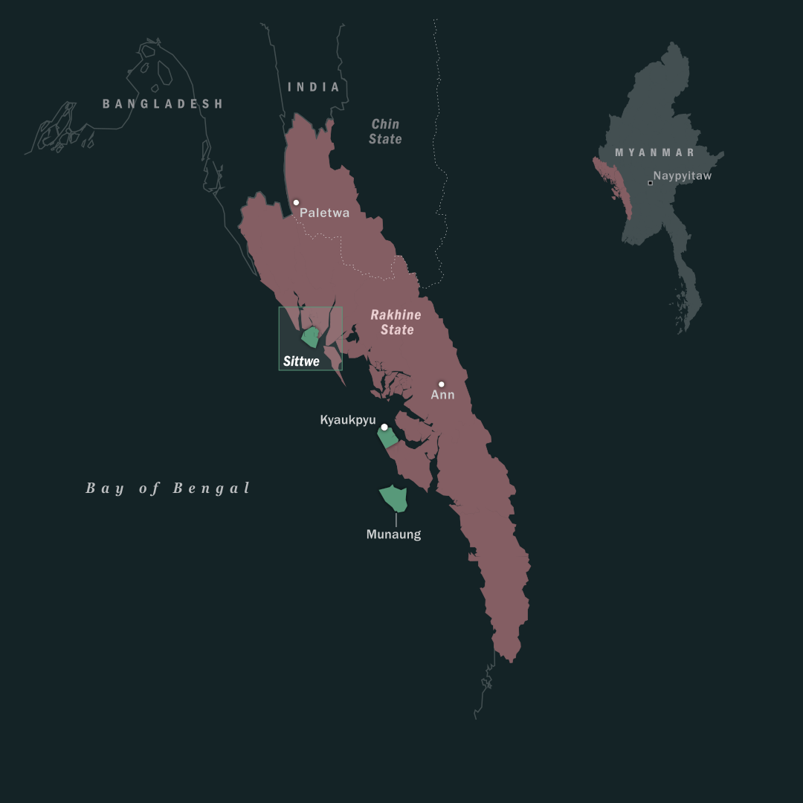
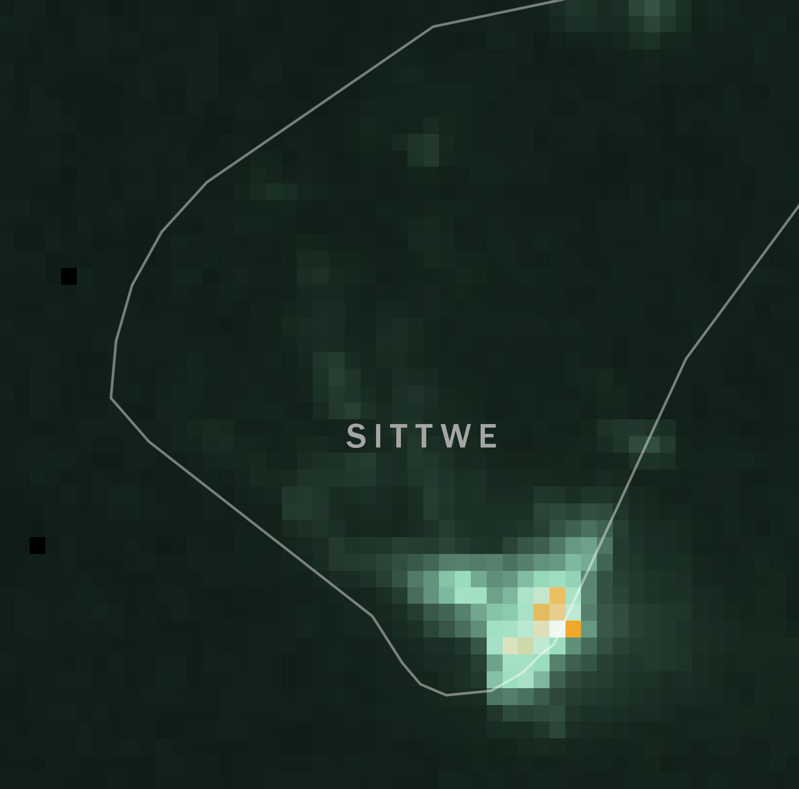
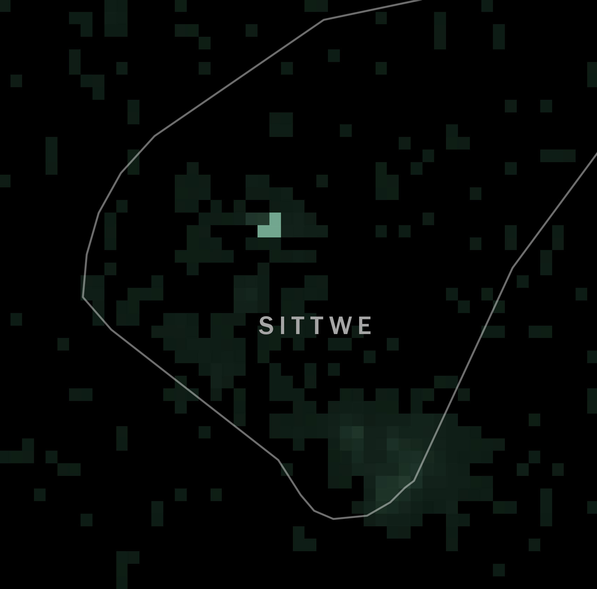
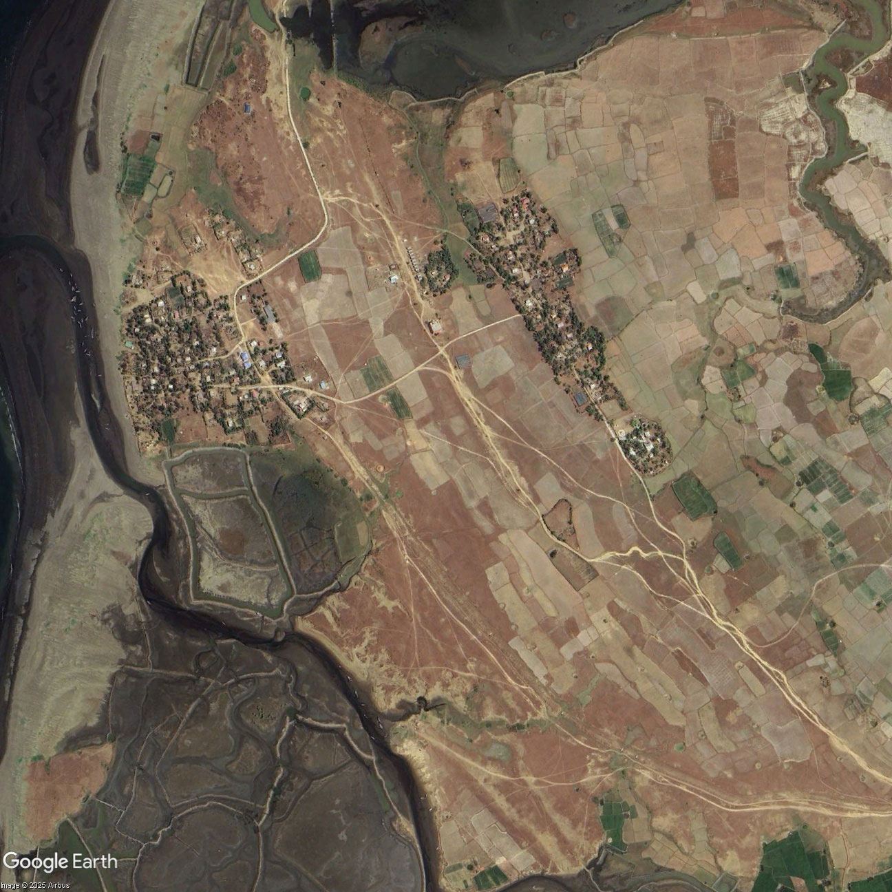
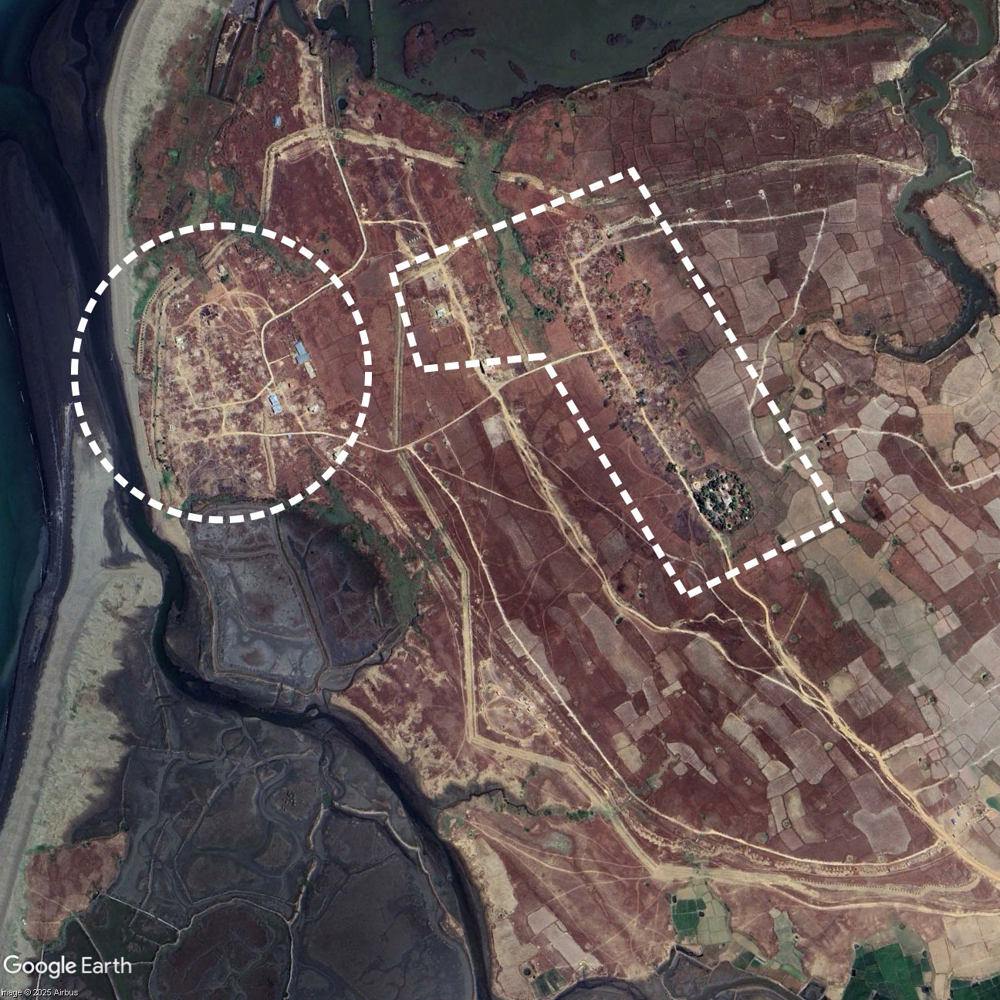
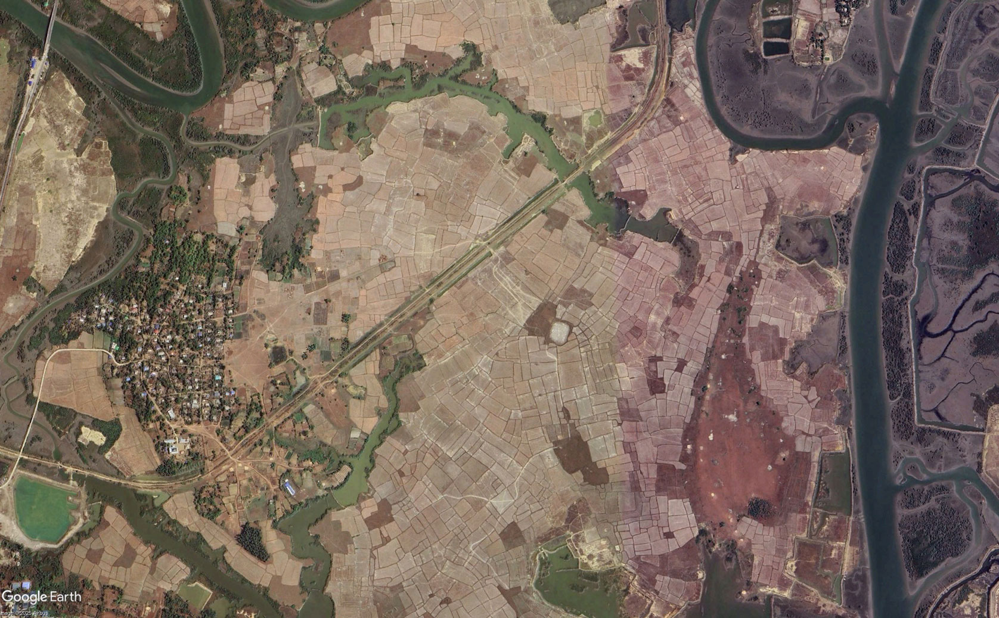
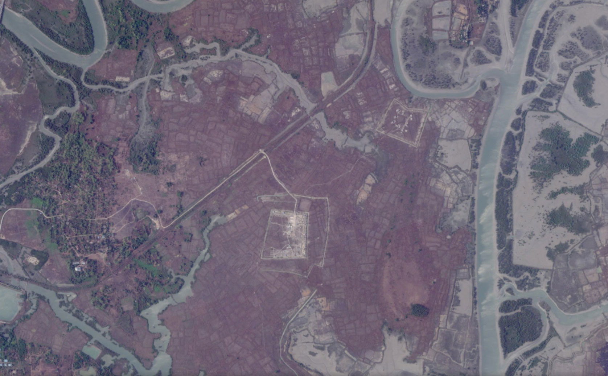
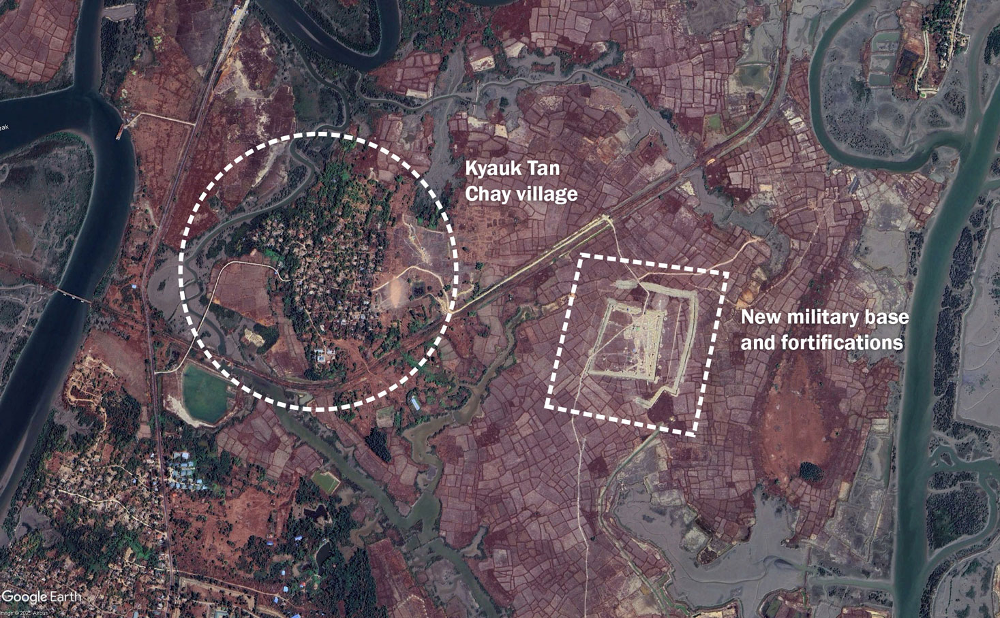
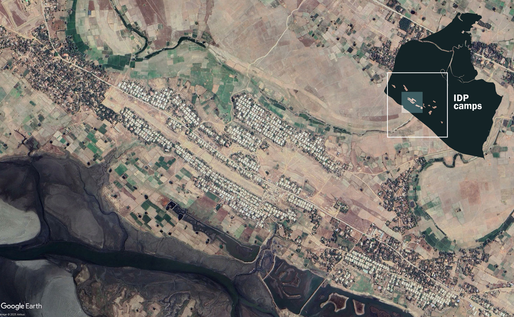

In November 2023, the Arakan Army launched a sweeping offensive across Rakhine State. Having already been in control of many rural areas for several years, the group’s forces quickly overwhelmed military bases and outposts in the north and centre of the state. By the end of 2024, it had captured fourteen of Rakhine’s seventeen townships, as well as Paletwa Township in neighbouring Chin State. Its prized scalps included the Regional Military Command at Ann and the tourism hub of Ngapali, as well as control of the entire Bangladeshi border and parts of the Indian border. The military, meanwhile, was pegged back to just three locations in Rakhine: Sittwe, a small section of Kyaukphyu Township – which hosts major Chinese energy infrastructure, including oil and gas pipelines, a fuel terminal and a power plant – and the island of Munaung.
The Myanmar military has focused on weakening the Arakan Army and preventing it from building a viable autonomous region. Since fighting resumed in 2023, it has blockaded Rakhine, preventing essential commodities from reaching Arakan Army-controlled areas. The blockade has caused severe economic hardship for the people of Rakhine, with skyrocketing prices pushing food insecurity to alarming levels. The military also switched off telephone and internet access, cut electricity supplies, shut down the banking system and carried out deadly airstrikes on a regular basis. In December, it targeted a hospital in the town of Mrauk-U, killing more than 30 people.
Though fighting continued through 2025, neither side was able to land a decisive blow. Together with allied resistance forces, Arakan Army troops advanced over the Rakhine Yoma mountain range into central Myanmar, where the group appeared to be eyeing a string of defence industry sites nestled in the foothills, but it has since made only limited headway. The military, for its part, seemed intent on launching a counteroffensive into southern Rakhine ahead of the December-January national election, but it also did not do so.

Since the start of the year, the Arakan Army has picked up the pace of its attacks, including around Sittwe. The group has consistently said it intends to seize control of the rest of Rakhine; during unsuccessful China-brokered ceasefire talks in May 2024, it demanded that the military quit the state in exchange for a deal. But capturing Sittwe will be a tougher challenge than anything the Arakan Army has accomplished thus far. The town is home to an estimated 250,000 people, both Rakhine and Rohingya, spread across the urban area, surrounding villages and Rohingya displacement camps. The capital is essentially an island, bounded on three sides by major water bodies; the only road access is via a bridge over Min Chaung, a creek that marks the border between military and Arakan Army control.
While highly defensible, Sittwe is also very isolated. Most food and other essentials arrive by plane or boat from Yangon, and prices have ballooned over the past two years. There is also little electricity or cooking fuel; residents now rely on charcoal or firewood, which is so scarce it is unaffordable to most. A 38-year-0ld Rohingya resident of a village on the outskirts of Sittwe said he and his neighbours have mostly reverted to bartering. “Everyone is struggling just to survive”, he said. “To put it simply, it feels like we’ve reverted to an ancient era. We rarely leave our villages. We grow what we can, we raise livestock, we fish and then we barter to get what we need.”

2023
2026While residents simply try to survive, the military has spent the past two years building up its defences. When the Arakan Army advanced into neighbouring Ponnagyun Township in February 2024, regime troops blew up the bridge over Min Chaung to prevent them from reaching Sittwe. Fearful that the armed group could use Rakhine villages on the township’s fringes to infiltrate the capital, it soon began forcing residents to abandon their homes. One of the first villages to be targeted was Byaing Phyu, just a few kilometres outside the city limits. Regime soldiers entered Byaing Phyu in late May 2024, apparently looking for Arakan Army supporters. After rounding up the residents, they reportedly massacred at least 50 people; the survivors were forced from their homes and have not been allowed to return. The junta denied allegations of mass killings, saying its forces were only carrying out a “peace and security” operation.

Elsewhere, the military gave residents a deadline of five days to leave their homes. Aware of the massacre at Byaing Phyu, they grudgingly complied; by the end of 2024, at least twenty villages, nearly all Rakhine, had been abandoned, satellite images show, confirming local civil society and media reports. Residents were forced into urban Sittwe, where they have been staying in monasteries or with relatives. Some of those forced from their homes have since fled Sittwe for Arakan Army-controlled areas.

March 2024
March 2025Some villages, such as Pa Lin Pyin on the township’s western coast, and old Kan Pyin to the east, were razed entirely and replaced with new security outposts – a chilling repeat of the military’s actions after driving Rohingya from their homes in northern Rakhine in 2017. In the remaining villages, the empty homes were looted and mostly demolished, the timber often sold for firewood. In February, the military even reportedly burned much of what remained in Thin Pone Dan, next to the army hospital, apparently out of concern that it could be used as a hideout by Arakan Army fighters.
After clearing the villages, the military set about fortifying the city’s outskirts. On the western, northern and eastern fringes of the town, it has built a network of trenches, fences and military outposts, some linked by newly built roads. In some cases, these fortifications have been constructed around the emptied villages, while in other areas they have been carved out of abandoned paddy fields. Security has also been upgraded across the dozen or so large military bases that Sittwe has long hosted, with the Regional Operations Command in the centre of the township now surrounded by concentric rings of fences and trenches. Numerous reports suggest the military has also laid mines in front of these defensive features (Myanmar is not party to the 1997 Ottawa Convention banning the laying of mines). To strengthen its defences further, the military has beefed up its naval presence around Sittwe.

2024
2026
2025Close to what is now the front line with the Arakan Army, the military has also built several large bases, linked by new roads and protected by rows of fortifications. To man these new outposts the regime has been sending in batches of reinforcements by boat – many of them conscripts drafted since February 2024, when it activated a longstanding military service law to replenish its ranks.

It is in this area that most of the recent fighting has been reported. In early January, Arakan Army commandos reportedly crossed Min Chaung and seized two military outposts near Kant Kaw Kyun and Thein Dan villages, though they do not appear to have held on to these sites. Further fighting was reported along a broader front in late February and early March, from the Shwe Min Gan port up to the northern shore of Sittwe Township, facing the Mayu River. The Arakan Army has also fired artillery into Sittwe; the military has responded by targeting Arakan Army positions and villages in neighbouring Ponnagyun, Pauktaw and Rathedaung townships.

Sittwe Township is also home to a large Rohingya population, including around 120,000 who were displaced by communal conflict in 2012. For almost fifteen years now, they have lived in squalid camps interspersed between Rohingya villages south west of the city. They are heavily dependent on international aid given restrictions on their freedom of movement. The military has also forcibly recruited and trained large numbers of young Rohingya men to bolster its ranks in the fight with the Arakan Army, assigning them to guard its new outposts. Because the military does not consider them citizens, the Rohingya recruits are not treated like regular conscripts: they are placed in militia units rather than the army. Many have complained of mistreatment at the hands of military officers, and in mid-January at least nineteen reportedly deserted from two regime outposts. The military has since detained as many as 50 Rohingya villagers, including village administrators and other local leaders, accusing them of links to the Arakan Army.
Rohingya told Crisis Group they fear a repeat of the violence that erupted in northern Rakhine State in 2024, after some Rohingya fought alongside the military in battles with the Arakan Army. The ethnic armed group allegedly burned Rohingya villages in retaliation, and since taking control of northern Rakhine, it has been accused of carrying out numerous human rights violations against the Muslim minority. The Arakan Army denies the allegations, but one Rohingya man said the military was “feeding us to the wolves”. “We’re really worried”, he told Crisis Group. “If the Arakan Army really attacks Sittwe, [the military] will retreat into their battalions inside the city, and then the Arakan Army will kill us.”

Whether the Arakan Army will expand its attacks on military positions in Sittwe to launch a major offensive is unclear. Given the military’s preparations for this scenario, a broader push would come at great cost, inflicting many casualties and immense destruction, while success is far from guaranteed. By demonstrating the weakness of the regime’s position through smaller, probing attacks, the Arakan Army could be trying to put itself in a stronger position for possible ceasefire talks. The military, too, is likely looking for a ceasefire with more powerful ethnic armed groups like the Arakan Army so it can focus its forces on weaker opponents. It may seek to relaunch discussions once junta leader Min Aung Hlaing assumes the presidency, following the regime’s sham election.
Prospects for a deal appear slim, however. Given how much territory it has lost, the military will not accept terms that freeze the conflict along the current front lines, and the Arakan Army is unlikely to cede territory willingly. China, which has leverage over both sides and has facilitated past talks, is reluctant to intervene decisively. Based on assurances from both sides, Beijing is confident that the Arakan Army and the military will be careful to avoid damaging its infrastructure investments. It believes that whichever side prevails will accommodate its interests.
That said, it is possible that the Arakan Army’s recent forays are a prelude to a larger offensive aimed at seizing the town. It would be a gamble, but the group has been preparing for this scenario for the last two years at least. Capturing the state capital would be a huge strategic and psychological victory over the regime, bringing the dream of an autonomous Rakhine State within reach. The town is an economic hub, home to a port that India built in order to improve connectivity with its north-eastern states, and a gateway to Bangladesh. But victory would not just put the Arakan Army in a much stronger bargaining position with Naypyitaw. It would also provide a major boost for Myanmar’s broader resistance movement at the national level, at a time when the military has been gaining ground in other areas of the country.